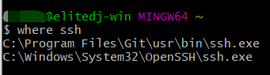

Windows10 VSCode SSH Remote '过程试图写入的管道不存在'解决方案
最近开始要做毕设了，搞了个腾讯云的服务器来做开发，想着用VS Code的SSH Remote连接服务器远程开发，但是死活连不上。尝试用各种终端SSH都是可以连接到服务器，但是VS Code一直出现过程试图写入的管道不存在这种错误，并且SSH连接使用的用户名也不是配置文件里面配置的用户名。
为了兼顾娱乐和开发，还是不打算切到Linux系统去弄。
最后Google查了半天发现是Windows10自带的openssh客户端会存在这个问题，具体原因也不太清楚，于是打算换一个SSH Client。刚好本机装有Git，自带一个SSH Client，所以打算换成这个来用。
打开Git Bash看看SSH的可执行文件都在哪
where ssh

然后在VS Code里面将SSH Remote的SSH Path改为Git的SSH Client的路径就好了。
又是啥也没干的一天…